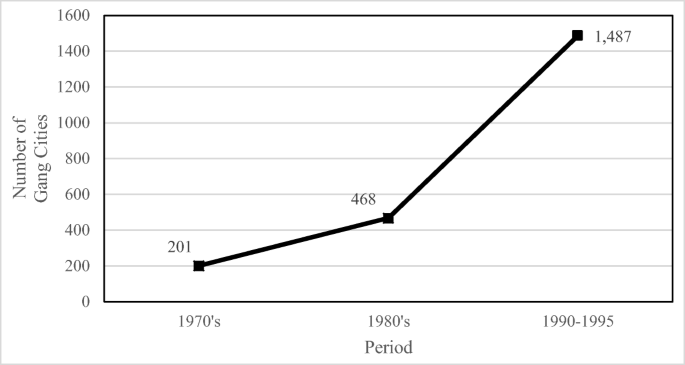

In poor areas, crime rates and violence are known to be higher. In the first half of the 1900s, many crimes such as bank-robbing, illegally selling alcohol, loan-sharing, and murder. Gangs that would perform petty crimes formed in poorer areas, and over time these gangs grew in number and power.
Gang formation and recruiting occurred mainly at the place where senior members were most likely to find healthy youth: schools. In Chicago, where gang violence is most prevalent and dangerous, three major black gangs formed. Two of these gangs, the Vice Lords and the Black P-Stone Nation/Black Stone Rangers, were created in the Illinois State Reformatory School at Saint Charles. By the 60’s, these black street gangs grew so large in power that they threatened the entire community. They preyed on whoever they felt infringed on their livelihood or power, and they used extreme violence and criminal activity to control the town.
The fear instilled by these groups made being a part of a gang the safest option for many children. There was no point in resisting them, as that would simply result in harm to one’s family. While the growth of gangs can partially be attributed to the racial and social unrest that existed at the time, many different black communities reacted differently. Much of the protest was non-violent, but gangs in Chicago chose to use violence instead.
Gangs kept the youth from getting valuable education. School grounds themselves were warzones, with opposing gangs causing violence on campus. Many students would not attend school as they feared the gangs that lurked the hallways, and others simply dropped out to participate in gang activities.
Data from American Journal of Criminial Justice demonstrating the increasing number of gang cities during the late 1900s
Image from US department of education showing the slow decline of gangs in schools.
Today, not much has changed. Gang presence has been rapidly increasing and will continue to do so without proper intervention. However, gang presence in schools is on a slow decline. Over the past few decades, the presence of gangs in middle and high schools has slowly began to decrease, in terms of percentage.Between 2009 and 2019, the percentage of students ages 12–18 who reported that gangs were present at their school during the school year decreased overall (from 20 to 9 percent), as well as for students who were White (from 14 to 6 percent), Black (from 31 to 15 percent), Hispanic (from 33 to 12 percent), and Asian (from 17 to 4 percent)>.
This doesn’t necessarily mean that less students are participating in gang activities, as many schools in poorer neighborhoods report low enrollment rates some years. Additionally, while individual schools have a lower gang presence, the number of schools with gang presence has overall increased. A study released by the National Center on Addiction and Substance Abuse reported that 45% of high school students have gangs or gang members on their campuses. This number has been increasing over time, as more gangs appear in cities.
Public education systems have begun to combat gang violence. Many sports matches or events involving rival schools tend to spur violence, so public schools in Chicago have started to cancel them. Additionally, one school changed it’s schedule so that students riding the public bus would not encounter students from rival schools. They have also implemented “gang-free” zones for students, and encourage extracurricular activities for the students to stay busy.
While the problem has been getting worse, we finally have a sense of improvement for the large gang violence problem that exists among the youth in schools.